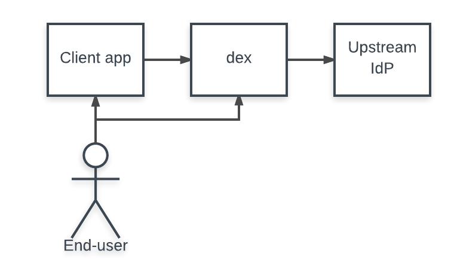
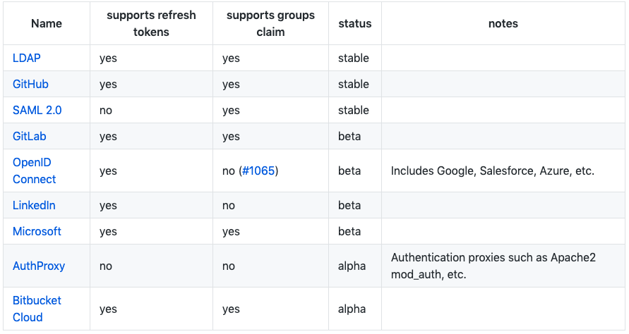

- 00 开篇词 怎样成长为优秀的软件架构师？.md
- 01 架构设计的宏观视角.md
- 02 大厦基石：无生有，有生万物.md
- 03 汇编：编程语言的诞生.md
- 04 编程语言的进化.md
- 05 思考题解读：如何实现可自我迭代的计算机？.md
- 06 操作系统进场.md
- 07 软件运行机制及内存管理.md
- 08 操作系统内核与编程接口.md
- 09 外存管理与文件系统.md
- 10 输入和输出设备：交互的演进.md
- 11 多任务：进程、线程与协程.md
- 12 进程内协同：同步、互斥与通讯.md
- 13 进程间的同步互斥、资源共享与通讯.md
- 14 IP 网络：连接世界的桥梁.md
- 15 可编程的互联网世界.md
- 16 安全管理：数字世界的守护.md
- 17 架构：需求分析 (上).md
- 18 架构：需求分析 (下) · 实战案例.md
- 19 基础平台篇：回顾与总结.md
- 20 桌面开发的宏观视角.md
- 21 图形界面程序的框架.md
- 22 桌面程序的架构建议.md
- 23 Web开发：浏览器、小程序与PWA.md
- 24 跨平台与 Web 开发的建议.md
- 25 桌面开发的未来.md
- 26 实战（一）：怎么设计一个“画图”程序？.md
- 27 实战（二）：怎么设计一个“画图”程序？.md
- 28 实战（三）：怎么设计一个“画图”程序？.md
- 29 实战（四）：怎么设计一个“画图”程序？.md
- 30 实战（五）：怎么设计一个“画图”程序？.md
- 31 辅助界面元素的架构设计.md
- 32 架构：系统的概要设计.md
- 33 桌面开发篇：回顾与总结.md
- 34 服务端开发的宏观视角.md
- 35 流量调度与负载均衡.md
- 36 业务状态与存储中间件.md
- 37 键值存储与数据库.md
- 38 文件系统与对象存储.md
- 39 存储与缓存.md
- 40 服务端的业务架构建议.md
- 41 实战（一）：“画图”程序后端实战.md
- 42 实战（二）：“画图”程序后端实战.md
- 43 实战（三）：“画图”程序后端实战.md
- 44 实战（四）：“画图”程序后端实战.md
- 45 架构：怎么做详细设计？.md
- 46 服务端开发篇：回顾与总结.md
- 47 服务治理的宏观视角.md
- 48 事务与工程：什么是工程师思维？.md
- 49 发布、升级与版本管理.md
- 50 日志、监控与报警.md
- 51 故障域与故障预案.md
- 52 故障排查与根因分析.md
- 53 过载保护与容量规划.md
- 54 业务的可支持性与持续运营.md
- 55 云计算、容器革命与服务端的未来.md
- 56 服务治理篇：回顾与总结.md
- 57 心性：架构师的修炼之道.md
- 58 如何判断架构设计的优劣？.md
- 59 少谈点框架，多谈点业务.md
- 60 架构分解：边界，不断重新审视边界.md
- 61 全局性功能的架构设计.md
- 62 重新认识开闭原则 (OCP).md
- 63 接口设计的准则.md
- 64 不断完善的架构范式.md
- 65 架构范式：文本处理.md
- 66 架构老化与重构.md
- 67 架构思维篇：回顾与总结.md
- 68 软件工程的宏观视角.md
- 69 团队的共识管理.md
- 70 怎么写设计文档？.md
- 71 如何阅读别人的代码？.md
- 72 发布单元与版本管理.md
- 73 软件质量管理：单元测试、持续构建与发布.md
- 74 开源、云服务与外包管理.md
- 75 软件版本迭代的规划.md
- 76 软件工程的未来.md
- 77 软件工程篇：回顾与总结.md
- 加餐 如何做HTTP服务的测试？.md
- 加餐 实战：“画图程序” 的整体架构.md
- 加餐 怎么保障发布的效率与质量？.md
- 热点观察 我看Facebook发币（上）：区块链、比特币与Libra币.md
- 热点观察 我看Facebook发币（下）：深入浅出理解 Libra 币.md
- 用户故事 站在更高的视角看架构.md
- 答疑解惑 想当架构师，我需要成为“全才”吗？.md
- 结束语 放下技术人的身段，用极限思维提升架构能力.md
- 课外阅读 从《孙子兵法》看底层的自然法则.md
44 实战（四）：“画图”程序后端实战
你好，我是七牛云许式伟。
上一讲我们介绍了帐号与授权相关的基础体系，并重点介绍 OAuth 2.0 背后的逻辑。今天我们开始考虑如何让 QPaint 引入帐号与授权体系。
最常规的做法，当然是自己建立一个帐号数据库，做基于用户名+密码的登录授权并转为基于Cookie的会话（Session）。示例如下：
但我们考虑提供 Open API 的话，就需要考虑遵循 OAuth 2.0 的授权协议规范，以便第三方应用可以快速接入，而不是搞半天去研究我们自己发明的授权是怎么回事。
除此之外，我们也可以考虑基于微信、支付宝等 OpenID 来实现用户的快速登录，而不是让用户在注册环节折腾半天。
所以，比较理想的方式是我们基于 OpenID Connect 协议来提供帐号系统，基于 OAuth 2.0 协议来实现 Open API 体系。
这个选择与业务无关。所以很自然地，我们决定评估一下，看看是否有开源项目和我们想得一样。
最后，我们发现 CoreOS 团队搞了一个叫 dex 的项目，如下：
- https://github.com/dexidp/dex
- https://github.com/xushiwei/dex (部分依赖库受 GFW 的影响，我们调整 Makefile 改为基于 go -mod=vendor 来编译。)
dex 项目的这么描述自己的：
dex - A federated OpenID Connect provider- OpenID Connect Identity (OIDC) and OAuth 2.0 Provider with Pluggable Connectors.
Dex is an identity service that uses OpenID Connect to drive authentication for other apps. Dex acts as a portal to other identity providers through “connectors.” This lets dex defer authentication to LDAP servers, SAML providers, or established identity providers like GitHub, Google, and Active Directory. Clients write their authentication logic once to talk to dex, then dex handles the protocols for a given backend.
概要来说，dex 基于各类主流的 OpenID 来提供帐号系统，上游的 OpenID Provider（即下图中的 Upstream IdP）是以插件方式（Pluggable Connector）提供。这也是为什么把它叫联邦 OpenID（federated OpenID）的原因。然后，dex 再通过 OAuth 2.0 协议对客户端（即下图中的 Client app）提供授权服务。

联邦 OpenID
我们先看 dex 在联邦 OpenID 这块的支持。当前已经支持的 Pluggable Connector 如下：

可以看出，对于那些支持 OpenID Connect 协议的 OpenID，比如 Google、Saleforce、Azure 等，可以统一用同一个 Connector 来支持。而对于其他的 OpenID，比如 Github，则实现一个独立的 Connector 来支持。
除了 OpenID Connect，我们也可以看到很多耳熟能详的开放帐号授权协议，比如在前面课程中，有人提议讲一讲的单点登录 SAML 2.0 和 LDAP。但这的确不是我们的重点。我们这里提供相关的链接供大家参考。
LDAP 的资料如下：
SAML 2.0 Web Browser Single-Sign-On 的资料如下：
- https://en.wikipedia.org/wiki/SAML_2.0
- http://docs.oasis-open.org/security/saml/Post2.0/sstc-saml-tech-overview-2.0.html
不同的 OpenID Provider 作为后端，会导致一些细节上的差异。有的 OpenID Provider 不支持更新令牌（Refresh Token），有的会导致 ID Token 不支持 groups 字段。详细在以上 Connector 列表中有明确说明。
另外，虽然 dex 支持了颇为丰富的 OpenID Provider，但不幸的是，国内的主流 OpenID Provider，比如微信和支付宝，都没有在支持之列。
不过好在，它基于开放的插件机制，我们可以自己依葫芦画瓢实现一个。Pluggable Connector 相关的文档和插件如下：
国内也会有人想到做类似 dex 这种项目，比如：
看到我们熟悉的微信、支付宝、新浪微博了，所以想到点子并不难，但看架构设计就会看到两者巨大的差距。
当然，如果你看到了其他很好的开源实现，欢迎留言交流。
提供 OpenID + OAuth 2.0 服务
尽管 dex 底层所基于的 OpenID Provider 多种多样，但是 dex 对外统一提供了标准的 OpenID Connect 协议和 OAuth 2.0 服务。
OpenID Connect 作为 OAuth 2.0 的一个扩展，最重要的一个改进是引入了身份令牌（ID Token）概念。
为什么需要扩展 OAuth 2.0？
因为 OAuth 2.0 本身只关心授权，所以它会返回访问令牌（Access Token）和更新令牌（Refresh Token）。但无论是访问令牌还是更新令牌，都并没有包含身份（Identity）信息。没有身份信息，就没法作为 OpenID Provider。
身份令牌（ID Token）解决了这一问题。ID Token 是一个 JSON Web Token (JWT) ，支持你对 Token 进行解码（decode）并验证（verify）用户身份。关于 JSON Web Token 的详细介绍，请参阅 https://jwt.io/ 。
dex 并不是一个包（package），而是一个可执行程序（application），它提供了帐号与授权服务。你可以这样运行它：
dex config.yaml
其中 config.yaml 是它的配置文件。其格式可参考以下这些样例：
- examples/config-dev.yaml（开发用途，用 mock 的帐号与授权服务。）
- examples/config-ldap.yaml（基于 LDAP 来做帐号与授权服务。）
使用 dex
有了 dex 服务，我们就可以开始回到 QPaint 业务，去支持帐号与授权了。
我们并不需要自己开发太多东西。
OAuth 2.0 的客户端 SDK，Go 语言自己有一个准官方的版本。如下：
OpenID Connect 的客户端 SDK，CoreOS 团队也开发了一个。如下：
具体如何对接 dex，CoreOS 团队也写了一个详细的说明文档。如下：
有了这些 SDK 和 dex 的使用说明，具体 QPaint 业务怎么对接 dex，就比较简单了。我们这里就不详细展开，详细代码请参考：
结语
总结一下今天的内容。
今天我们主要讨论如何基于 OAuth 2.0 来改造 QPaint 的帐号与授权机制。实际上这方面业界有非常成熟的实践，所以我们没有太大的必要去自己重新造一个轮子。我们的核心思路是，基于 OpenID Connect 协议来提供帐号系统，基于 OAuth 2.0 协议来实现 Open API 体系。
我们不只是用标准的协议，背后的实现也基于开源项目：CoreOS 团队开发的 dex。
这样，我们就可以把关注的重心放在 QPaint 业务本身上。
如果你对今天的内容有什么思考与解读，欢迎给我留言，我们一起讨论。我们服务端程序的实战到这里就要结束了。下一讲聊一聊 “架构：怎么做详细设计” 这个话题。
如果你觉得有所收获，也欢迎把文章分享给你的朋友。感谢你的收听，我们下期再见。
© 2019 - 2023 Liangliang Lee. Powered by gin and hexo-theme-book.